> 本文件由 `大数据实验8.pptx`、`神经网络- 补充题目.pptx` 整理而成；
> 课件本身（.pptx）未收录进本仓库；文中的图片是幻灯片里原有的公式与数据表。
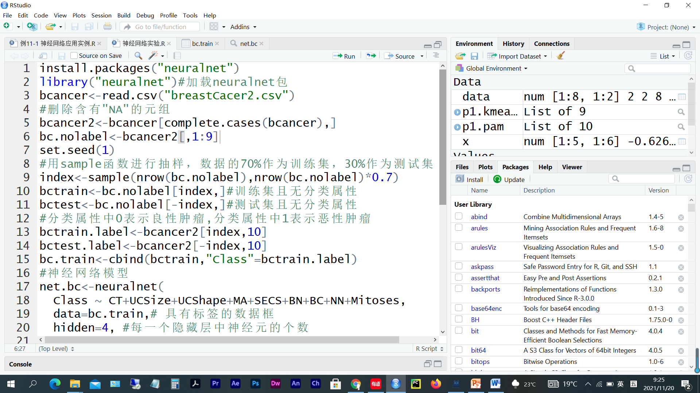
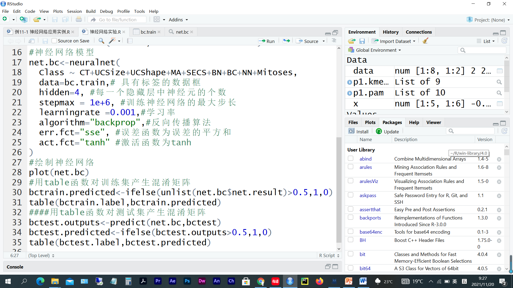
library(neuralnet)
bcancer = read.csv('breastCacer2.csv')
bcancer2 = bcancer[complete.cases(bcancer),]
bc.nolabel = bcancer2[,1:9]
set.seed(1)
index = sample(nrow(bc.nolabel),nrow(bc.nolabel)*0.7)
bctrain = bc.nolabel[index,]
bctest = bc.nolabel[-index,]
bctrain.label = bcancer2[index,10]
bctest.label = bcancer2[-index,10]
bc.train = cbind(bctrain,'Class'=bctrain.label)
net.bc = neuralnet(
Class ~ CT+UCSize+UCShape+MA+SECS+BN+BC+NN+Mitoses,
data = bc.train,
hidden = 4,
stepmax = 1e+6,
learningrate = 0.001,
algorithm = 'backprop',
err.fct = 'sse',
act.fct = 'tanh'
)
plot(net.bc)
bctrain.predicted = ifelse(unlist(net.bc$net.result)>0.5,1,0)
table(bctrain.label,bctrain.predicted)
bctest.outputs = predict(net.bc,bctest)
bctest.predicted = ifelse(bctest.outputs>0.5,1,0)
table(bctest.label,bctest.predicted)
bctrain.predicted
bctrain.label 0 1
0 304 3
1 1 170
bctest.predicted
bctest.label 0 1
0 132 5
1 10 58
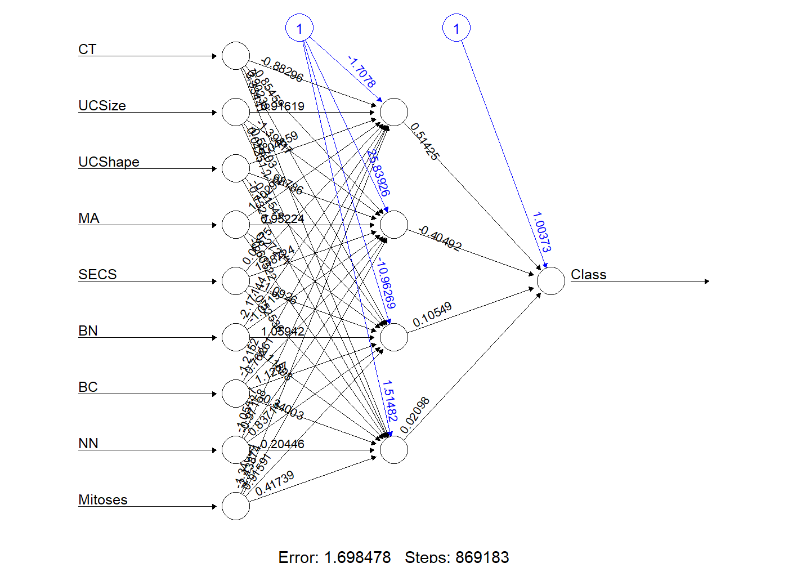
library(neuralnet)
bcancer = read.csv('breastCacer2.csv')
bcancer2 = bcancer[complete.cases(bcancer),]
bc.nolabel = bcancer2[,1:9]
set.seed(1)
index = sample(nrow(bc.nolabel),nrow(bc.nolabel)*0.7)
bctrain = bc.nolabel[index,]
bctest = bc.nolabel[-index,]
bctrain.label = bcancer2[index,10]
bctest.label = bcancer2[-index,10]
bc.train = cbind(bctrain,'Class'=bctrain.label)
net.bc = neuralnet(
Class ~ CT+UCSize+UCShape+MA+SECS+BN+BC+NN+Mitoses,
data = bc.train,
hidden = 4,
stepmax = 1e+6,
learningrate = 0.001,
algorithm = 'backprop',
err.fct = 'sse',
act.fct = 'tanh'
)
plot(net.bc)
bctrain.predicted = ifelse(unlist(net.bc$net.result)>0.5,1,0)
table(bctrain.label,bctrain.predicted)
# 计算训练集准确率
train_accuracy <- sum(diag(table(bctrain.label, bctrain.predicted))) / length(bctrain.label)
cat("训练集准确率：", train_accuracy, "\n")
bctest.outputs = predict(net.bc,bctest)
bctest.predicted = ifelse(bctest.outputs>0.5,1,0)
table(bctest.label,bctest.predicted)
# 计算测试集准确率
test_accuracy <- sum(diag(table(bctest.label, bctest.predicted))) / length(bctest.label)
cat("测试集准确率：", test_accuracy, "\n")
bctrain.predicted
bctrain.label 0 1
0 304 3
1 1 170
训练集准确率： 0.9916318
bctest.predicted
bctest.label 0 1
0 132 5
1 10 58
测试集准确率： 0.9268293
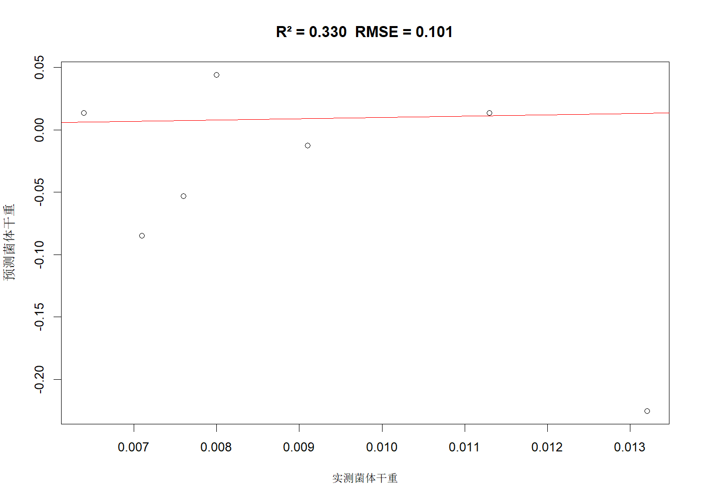
library(neuralnet)
bcancer = read.csv('breastCacer2.csv')
bcancer2 = bcancer[complete.cases(bcancer),]
bc.nolabel = bcancer2[,1:9]
set.seed(1)
index = sample(nrow(bc.nolabel),nrow(bc.nolabel)*0.7)
bctrain = bc.nolabel[index,]
bctest = bc.nolabel[-index,]
bctrain.label = bcancer2[index,10]
bctest.label = bcancer2[-index,10]
bc.train = cbind(bctrain,'Class'=bctrain.label)
learningrate.test = c(0.1,0.05,0.01,0.005,0.001)
time.cost = numeric(length(learningrate.test))
for (learningrate in learningrate.test){
t1 = proc.time()
net.bc = neuralnet(
Class ~ CT+UCSize+UCShape+MA+SECS+BN+BC+NN+Mitoses,
data = bc.train,
hidden = 4,
stepmax = 1e+6,
learningrate = learningrate, # 原固定0.001，改为循环变量
algorithm = 'rprop+',
err.fct = 'sse',
act.fct = 'tanh'
)
t2 = proc.time()
time.cost[learningrate==learningrate.test] = (t2-t1)[3]
print(paste0('执行时间:',(t2-t1)[3],'秒'))
}
plot(learningrate.test, time.cost,
type = "o", # 折线+点
pch = 16, # 实心圆点
xlab = "学习率",
ylab = "时间（秒）",
main = "不同学习率下的训练耗时")
[1] "执行时间:0.27000000000001秒" [1] "执行时间:0.259999999999991秒" [1] "执行时间:0.580000000000013秒" [1] "执行时间:0.97999999999999秒" [1] "执行时间:0.830000000000013秒"
library(neuralnet)
# 1. 读数据、清洗、划分
bcancer <- read.csv('breastCacer2.csv')
bcancer2 <- bcancer[complete.cases(bcancer), ]
bc.nolabel <- bcancer2[, 1:9]
set.seed(1)
index <- sample(nrow(bc.nolabel), nrow(bc.nolabel)*0.7)
bctrain <- bc.nolabel[index, ]
bctest <- bc.nolabel[-index, ]
bctrain.label <- bcancer2[index, 10]
bctest.label <- bcancer2[-index, 10]
bc.train <- as.data.frame(cbind(bctrain, Class = bctrain.label))
bctest <- as.data.frame(bctest)
# 2. 不同隐藏神经元个数训练 & 记录准确率
hidden.vec <- 2:10
train.acc <- numeric(length(hidden.vec))
test.acc <- numeric(length(hidden.vec))
for (i in seq_along(hidden.vec)){
h <- hidden.vec[i]
net.bc <- neuralnet(
Class ~ CT + UCSize + UCShape + MA + SECS + BN + BC + NN + Mitoses,
data = bc.train,
hidden = h,
stepmax = 1e+6,
learningrate = 0.01,
algorithm = "rprop+",
err.fct = "sse",
act.fct = "tanh"
)
train.pred <- as.numeric(unlist(net.bc$net.result) > 0.5)
test.pred <- as.numeric(unlist(predict(net.bc, bctest)) > 0.5)
train.acc[i] <- mean(train.pred == bctrain.label)
test.acc[i] <- mean(test.pred == bctest.label)
}
# 3. 画图
plot(hidden.vec, train.acc, type = "o", pch = 16,
xlab = "神经元个数", ylab = "训练集正确率",
main = "图1：训练集正确率的变化曲线")
plot(hidden.vec, test.acc, type = "o", pch = 15,
xlab = "神经元个数", ylab = "测试集正确率",
main = "图2：测试集正确率的变化曲线")
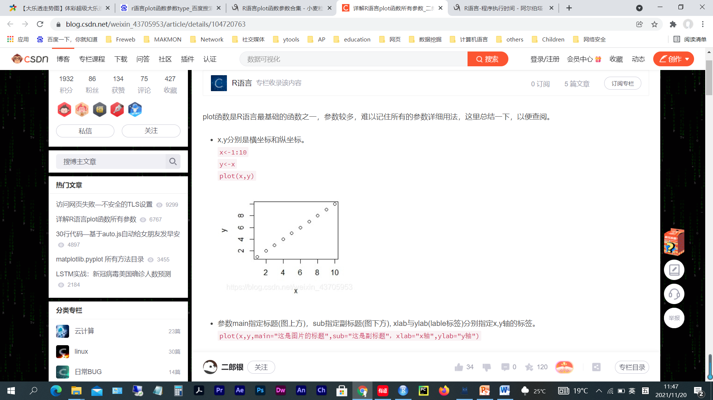
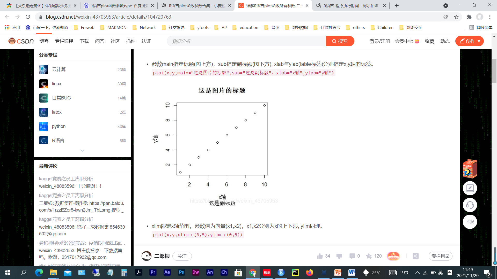
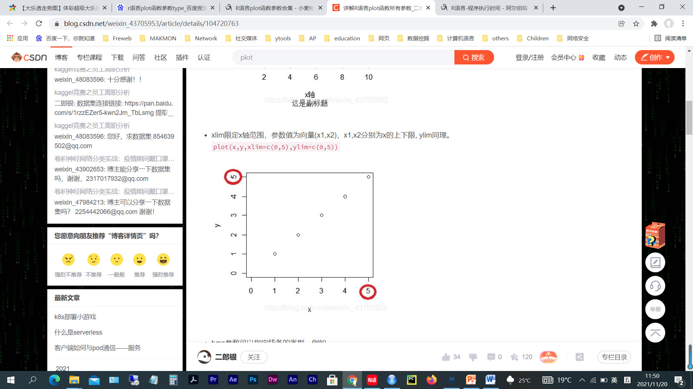
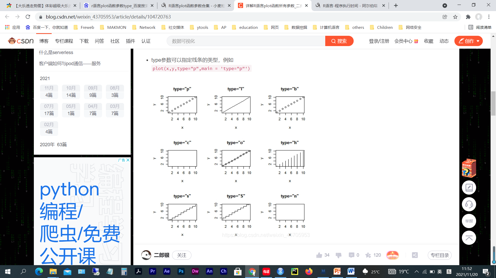
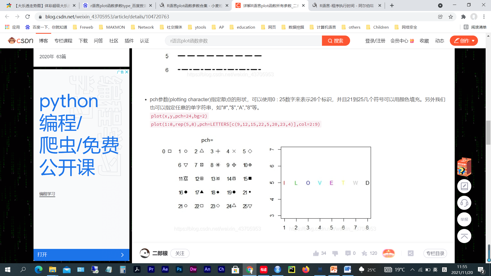
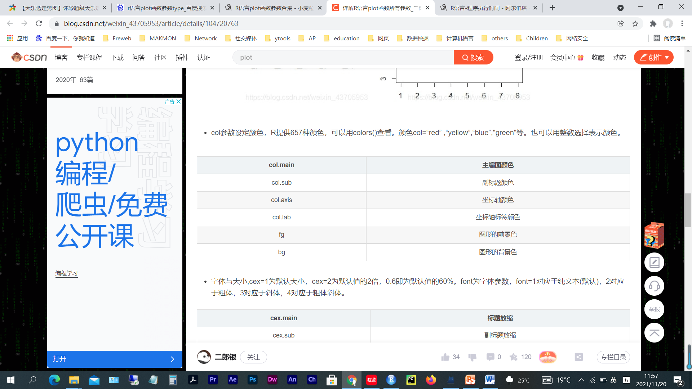
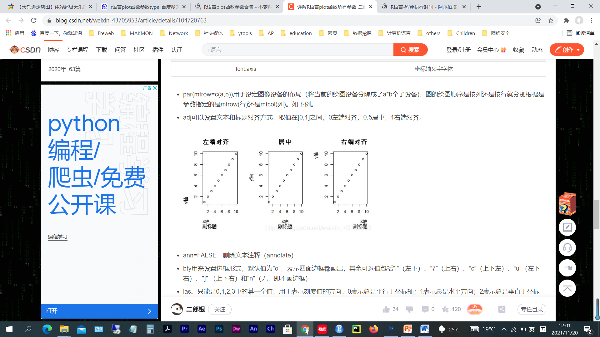
library(neuralnet)
library(Metrics)
df <- read.csv("data.csv")
df <- na.omit(df)
n <- nrow(df)
train <- df[1:round(0.7*n), ]
test <- df[(round(0.7*n)+1):n, ]
nn <- neuralnet(x6 ~ x1 + x2 + x3 + x4 + x5,
data = train,
hidden = 3,
learningrate = 0.01,
linear.output = TRUE,
act.fct = "tanh",
algorithm = "backprop",
stepmax = 1e6)
# 4. 预测 + 评价
pred <- predict(nn, test)
R2 <- cor(pred, test$x6)^2
RMSE <- rmse(test$x6, pred)
cat(sprintf("R² = %.3f RMSE = %.3f\n", R2, RMSE))
# 5. 真实 vs 预测散点
plot(test$x6, pred,
xlab = "实测菌体干重", ylab = "预测菌体干重",
main = sprintf("R² = %.3f RMSE = %.3f", R2, RMSE))
abline(0, 1, col = "red")
R² = 0.330 RMSE = 0.101